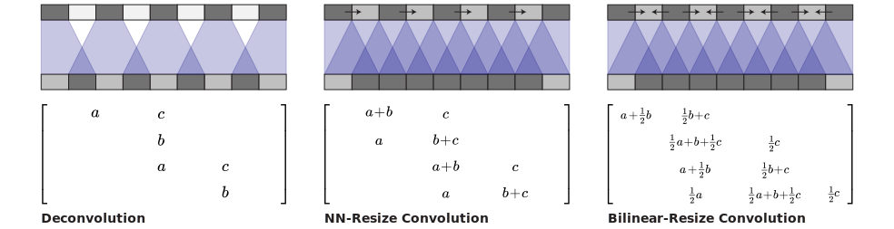

Deconvolution and Checkerboard Artifacts
When we look very closely at images generated by neural networks, we often see a strange checkerboard pattern of artifacts. It's more obvious in some cases than others, but a large fraction of recent models exhibit this behavior.
Mysteriously, the checkerboard pattern tends to be most prominent in images with strong colors.
What's going on? Do neural networks hate bright colors? The actual cause of these artifacts is actually remarkably simple, as is a method for avoiding them.
Deconvolution & Overlap
When we have neural networks generate images, we often have them build them up
from low resolution, high-level descriptions.
This allows the network to describe the rough image and then fill in the details.
In order to do this, we need some way to go from a lower resolution image to a higher one.
We generally do this with the deconvolution operation.
Roughly, deconvolution layers allow the model to use every point
in the small image to "paint" a square in the larger one.
(Deconvolution has a number of interpretations and different names, including "transposed convolution."
We use the name "deconvolution" in this article for brevity.
For excellent discussion of deconvolution, see .)
Unfortunately, deconvolution can easily have "uneven overlap,"
putting more of the metaphorical paint in some places than others .
In particular, deconvolution has uneven overlap when the kernel size (the output window size) is not divisible by the stride (the spacing between points on the top).
While the network could, in principle, carefully learn weights to avoid this
-- as we'll discuss in more detail later --
in practice neural networks struggle to avoid it completely.
The overlap pattern also forms in two dimensions.
The uneven overlaps on the two axes multiply together,
creating a characteristic checkerboard-like pattern of varying magnitudes.
In fact, the uneven overlap tends to be more extreme in two dimensions!
Because the two patterns are multiplied together, the unevenness gets squared.
For example, in one dimension, a stride 2, size 3 deconvolution has some outputs with twice the number of inputs as others,
but in two dimensions this becomes a factor of four.
Now, neural nets typically use multiple layers of deconvolution when creating images,
iteratively building a larger image out of a series of lower resolution descriptions.
While it's possible for these stacked deconvolutions to cancel out artifacts,
they often compound, creating artifacts on a variety of scales.
Stride 1 deconvolutions --
which we often see as the last layer in successful models (eg. )
-- are quite effective at dampening artifacts.
They can remove artifacts of frequencies
that divide their size, and reduce others artifacts of frequency less than their
size. However, artifacts can still leak through, as seen in many recent models.
In addition to the high frequency checkerboard-like artifacts we observed above,
early deconvolutions can create lower-frequency artifacts,
which we'll explore in more detail later.
These artifacts tend to be most prominent when outputting unusual colors.
Since neural network layers typically have a bias
(a learned value added to the output) it's easy to output the average color.
The further a color -- like bright red -- is away from the average color,
the more deconvolution needs to contribute.
Overlap & Learning
Thinking about things in terms of uneven overlap is -- while a useful framing --
kind of simplistic. For better or worse, our models learn weights for their deconvolutions.
In theory, our models could learn to carefully write to unevenly overlapping positions so that the output
is evenly balanced.

This is a tricky balancing act to achieve, especially when one has multiple channels interacting.
Avoiding artifacts significantly restricts the possible filters, sacrificing model capacity.
In practice, neural networks struggle to learn to completely avoid these patterns.
In fact, not only do models with uneven overlap not learn to avoid this,
but models with even overlap often learn kernels that cause similar artifacts!
While it isn't their default behavior the way it is for uneven overlap,
it's still very easy for even overlap deconvolution to cause artifacts.

Completely avoiding artifacts is still a significant restriction on filters,
and in practice the artifacts are still present in these models, although they seem milder.
(See ,
which uses stride 2 size 4 deconvolutions, as an example.)
There are probably a lot of factors at play here.
For example, in the case of Generative Adversarial Networks (GANs), one issue may be the discriminator and its gradients
(we'll discuss this more later).
But a big part of the problem seems to be deconvolution.
At best, deconvolution is fragile because it very easily represents artifact creating functions, even when the size is carefully chosen.
At worst, creating artifacts is the default behavior of deconvolution.
Is there a different way to upsample that is more resistant to artifacts?
Better Upsampling
To avoid these artifacts, we'd like an alternative to regular deconvolution ("transposed convolution").
Unlike deconvolution, this approach to upsampling shouldn't have artifacts as its default behavior.
Ideally, it would go further, and be biased against such artifacts.
One approach is to make sure you use a kernel size that is divided by your stride,
avoiding the overlap issue.
This is equivalent to "sub-pixel convolution," a technique which has recently
had success in image super-resolution .
However, while this approach helps, it is still easy for deconvolution to fall into creating artifacts.
Another approach is to separate out upsampling to a higher resolution from convolution to compute features.
For example, you might resize the image (using nearest-neighbor interpolation or bilinear interpolation) and then do a convolutional layer.
This seems like a natural approach, and roughly similar methods have worked well in image super-resolution (eg. ).

Both deconvolution and the different resize-convolution approaches are linear operations, and can be interpreted as matrices.
This a helpful way to see the differences between them.
Where deconvolution has a unique entry for each output window, resize-convolution is implicitly weight-tying in a way that discourages high frequency artifacts.
We've had our best results with nearest-neighbor interpolation, and had difficulty making bilinear resize work.
This may simply mean that, for our models, the nearest-neighbor happened to work well with hyper-parameters optimized for deconvolution.
It might also point at trickier issues with naively using bilinear interpolation, where it resists high-frequency image features too strongly.
We don't necessarily think that either approach is the final solution to upsampling, but they do fix the checkerboard artifacts.
Code
Resize-convolution layers can be easily implemented in TensorFlow using tf.image.resize_images(). For best results, use tf.pad() before doing convolution with tf.nn.conv2d() to avoid boundary artifacts.
Image Generation Results
Our experience has been that nearest-neighbor resize followed by a convolution works very well, in a wide variety of contexts.
One case where we've found this approach to help is Generative Adversarial Networks. Simply switching out the standard deconvolutional layers for nearest-neighbor resize followed by convolution causes artifacts of different frequencies to disappear.
In fact, the difference in artifacts can be seen before any training occurs.
If we look at the images the generator produces, initialized with random weights,
we can already see the artifacts:
This suggests that the artifacts are due to this method of generating images, rather than adversarial training.
(It also suggests that we might be able to learn a lot about good generator design without the slow feedback cycle of training models.)
Another reason to believe these artifacts aren't GAN specific is that we see them in other kinds of models, and have found that they also go away when we switch to resize-convolution upsampling.
For example, consider real-time artistic style transfer where a neural net is trained to directly generate style-transferred images.
We've found these to be vulnerable to checkerboard artifacts (especially when the cost doesn't explicitly resist them).
However, switching deconvolutional layers for resize-convolution layers makes the artifacts disappear.
Forthcoming papers from the Google Brain team will demonstrate the benefits of this technique
in more thorough experiments and state-of-the-art results.
(We've chosen to present this technique separately because we felt it merited more detailed discussion, and because it cut across multiple papers.)
Artifacts in Gradients
Whenever we compute the gradients of a convolutional layer,
we do deconvolution (transposed convolution) on the backward pass.
This can cause checkerboard patterns in the gradient,
just like when we use deconvolution to generate images.
The presence of high-frequency "noise" in image model gradients is
already known in the feature visualization community, where it's a major challenge.
Somehow, feature visualization methods must compensate for this noise.
For example, DeepDream
seems to cause destructive interference between artifacts in a number of ways,
such as optimizing many features simultaneously, and optimizing at many offsets and scales.
In particular, the "jitter" of optimizing at different offsets cancels out some of the checkerboard artifacts.
(While much some of the artifacts are our standard checkerboard pattern,
others are a less organized high-frequency pattern.
We believe these to be caused by max pooling.
Max pooling was previously linked to high-frequency artifacts in .)
More recent work in feature visualization (eg. ),
has explicitly recognized and compensated for these high-frequency gradient components.
One wonders if better neural network architectures could make these efforts unnecessary.
Do these gradient artifacts affect GANs?
If gradient artifacts can affect an image being optimized based on a neural networks gradients in feature visualization,
we might also expect it to affect the family of images parameterized by the generator as they're optimized by the discriminator in GANs.
We've found that this does happen in some cases.
When the generator is neither biased for or against checkerboard patterns,
strided convolutions in the discriminator can cause them.
It's unclear what the broader implications of these gradient artifacts are.
One way to think about them is that some neurons will get many times the gradient of their neighbors, basically arbitrarily.
Equivalently, the network will care much more about some pixels in the input than others, for no good reason.
Neither of those sounds ideal.
It seems possible that having some pixels affect the network output much more than others may exaggerate adversarial counter-examples.
Because the derivative is concentrated on small number of pixels,
small perturbations of those pixels may have outsized effects.
We have not investigated this.
Conclusion
The standard approach of producing images with deconvolution -- despite its successes! -- has some very conceptually simple issues that lead to artifacts in produced images.
Using a natural alternative without these issues causes the artifacts to go away
(Analogous arguments suggest that standard strided convolutional layers may also have issues).
This seems like an exciting opportunity to us!
It suggests that there is low-hanging fruit to be found in carefully thinking through neural network architectures, even ones where we seem to have clean working solutions.
In the meantime, we've provided an easy to use solution that improves the quality of many approaches to generating images with neural networks. We look forward to seeing what people do with it, and whether it helps in domains like audio, where high frequency artifacts would be particularly problematic.